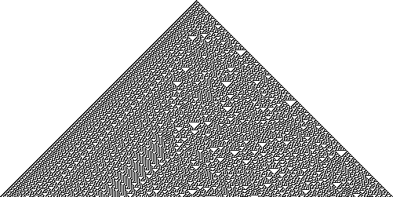
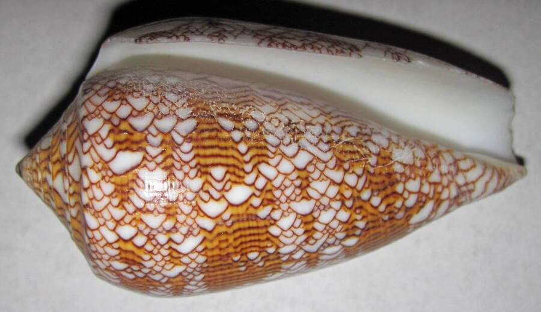
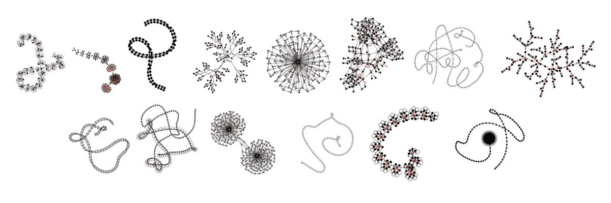

Growing reservoir computers
What distinguishes life from non-living matter? Until the late 19th century, scientists believed that life possessed a special vital force, a property not just of living beings but of the very chemicals they are made of. By the mid-20th century, the discovery of the structures of DNA and RNA, along with the successful synthesis of polynucleotides, revealed that life’s chemistry follows the same physical laws as everything else. The atoms in our bodies are the same ones found throughout the universe. Yet something about living systems remains unique beyond their chemistry. In recent years, researchers have turned to function as the defining feature of life.
What gives rise to function in multicellular organisms? At the level of species, evolutionary biology tells us that function is the reason certain structures evolve through natural selection over generations. For example, Pakicetus, the common ancestor of whales, gained an evolutionary advantage by growing fin-like structures that improved its aquatic locomotion (a big oversimplification!). At the level of the organism, morphogenesis is the process by which cells collectively build those same functional structures: a whale’s fins, eyes, lungs, and so on.
The emergence of structure purely from local interactions between cells is one of nature’s greatest shows, and it plays out right before our eyes. Much work has gone into understanding it. Alan Turing made the first attempt to model morphogenesis in his 1952 paper, The Chemical Basis of Morphogenesis. The patterns his model describes, now known as Turing patterns, help explain the designs of some of the coolest-looking fish (see Synchiropus splendidus).
Another big step toward solving the morphogenetic puzzle was a computational framework known as cellular automata (CA). The idea traces back to the 1940s with the pioneering work of John von Neumann. A conventional CA is a grid of cells, each of which is either dead or alive (a state of 0 or 1). Local rules, based on the states of a cell’s neighbours and its own, decide whether each cell persists, dies or replicates. Elementary CA, which are one-dimensional (with time acting as the second dimension), can produce complex, seemingly random patterns from very simple rules. Below, rule 30 is shown next to the shell of a Conus textile.


Over the last couple of decades, there have been significant efforts to combine machine learning with CA. In 2020, Mordvintsev et al. introduced Neural Cellular Automata (NCA) as a new model of morphogenesis. By using neural networks as transition rules, NCAs can grow predefined two-dimensional shapes from a single-cell seed. They can also repair themselves, much like a gecko regrowing its tail.
Two-dimensional grids are great for images, but I personally enjoy the flexibility of graphs. Naturally, I tried to replicate these results on a graph lattice to grow three-dimensional structures, and it mostly worked. The problem is that both approaches are tied to a fixed grid, so most of the benefits of graphs (i.e. irregular, emergent connections between nodes) go unused. Moreover, as we’ve seen so far, morphogenesis is not just about form; it’s about function.
Developmental Graph Cellular Automata (DGCA) (Waldegrave et al., 2023) build on NCAs by growing directed graphs guided by fitness functions. Evolutionary algorithms find the optimal set of “genes” (the transition rule networks), and the CA takes care of the rest. This is where function comes in: a directed graph can be used as a recurrent neural network (RNN), so the structures DGCA grow can compute. RNNs excel at modeling sequential data and have become powerful tools for tasks such as time series prediction and natural language processing.
Despite their usefulness, RNNs are computationally expensive to train because they rely on backpropagation through time. Reservoir computing (RC) was developed in response. In RC, a large, fixed, randomly connected RNN (the reservoir) provides rich nonlinear dynamics, and only the readout layer is trained. However, conventional RC relies on brute force: reservoirs are randomly initialized one after another until one with the right dynamics turns up. This raises a compelling question: why not orchestrate the growth of our own reservoirs?
This is the function we have been looking for: computation. And not just any computation. Reservoir computers are much closer to how nature computes than the classical von Neumann architecture. Models like Echo State Networks (ESNs) and Liquid State Machines (LSMs) mimic how cortical microcircuits in the brain handle spatiotemporal information through sparse, recurrently connected spiking neurons. DGCA-grown reservoirs therefore draw on nature along three axes: evolution, morphogenesis, and computation. Each of these ideas has inspired plenty of work on its own, but seeing all three combined in a single system is not something you come across every day. Together, they bring us closer to systems that grow and compute the way living things do.
If this intrigues you, read the paper. You’ll find that many of the grown reservoirs have sparse, “life-like” structures rather than small-world ones. This suggests that form may play a deeper role in computation within dynamical systems than previously thought.
